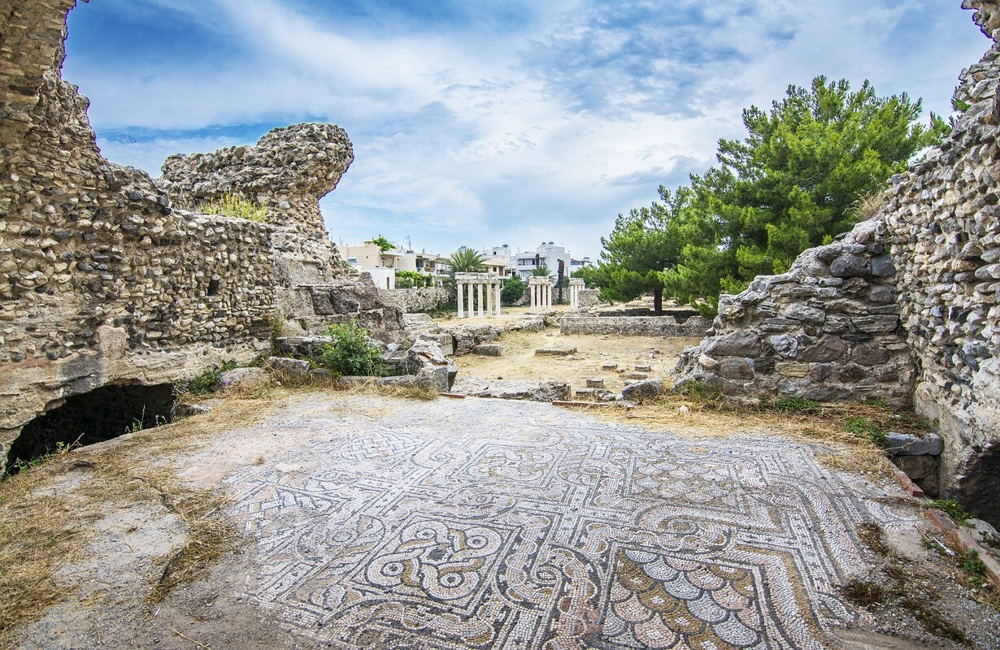
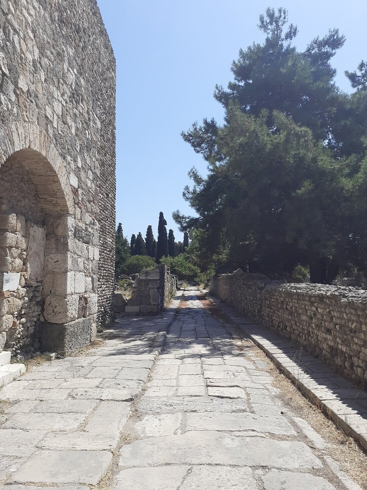

Openluchtterrein met gymnasium, thermen, luxetoilet en het Huis van Europa – blootgelegd na de aardbeving van 1933.
Na de aardbeving van 1933
De westelijke opgravingen herbergen een schat aan archeologische vondsten. Die kwamen tevoorschijn tijdens de aardbeving van 1933. De Italianen groeven het terrein verder uit tijdens de wederopbouw van de stad.
Je loopt tussen resten uit de Hellenistische en Romeinse tijd (ongeveer 300 v.Chr. tot 300 n.Chr.): badhuizen (thermen), een gymnasium, een nymphaeum en meer.
Openingstijden
Toegang gratis.
Gymnasium en thermen
Delen van een gymnasium waar jongeren sportten en trainden, en de westelijke baden (thermen) zijn hier te zien.
De luxe wc (forica)
Wat eerst een nymphaeum (heiligdom van de waternimfen) leek – met marmer, geometrische mozaïeken en dolfijnen – bleek een super-luxe openbaar toilet uit de Romeinse tijd.
Stromend water, marmer en mozaïeken: typisch Romeins om zelfs het toilet chic te maken. Je kon er rustig kletsen. De marmeren vloer en de zitplaatsen zijn nog goed te zien.
Huis van Europa
Het Huis van Europa (Huis van de Ontvoering van Europa) heeft een indrukwekkend mozaïek: Zeus verandert in een witte stier om prinses Europa te ontvoeren en zwemt met haar naar Kreta. Een van de hoogtepunten van het terrein.

Terrein
DetailBezoeken
In Kos-stad, openluchtterrein. Gratis; dinsdag gesloten.
Tip: zoek het mozaïek van Europa en de forica – die twee verhalen maken het bezoek extra leuk. Draag stevige schoenen.